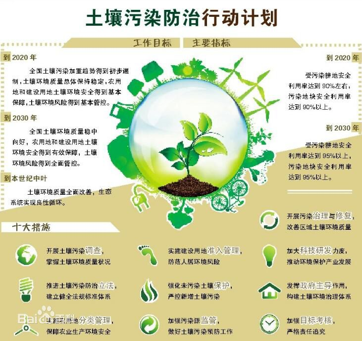

《土壤污染防治行动计划》实施意见 |
|  |
| 各省、自治区、直辖市及计划单列市农业（农牧、农村经济）、畜牧、兽医厅（局、委、办），新疆生产建设兵团农业局：
为深入贯彻落实《土壤污染防治行动计划》，切实加强农用地土壤污染防治，逐步改善土壤环境质量，保障农产品质量安全，特制定本实施意见。 |
| 一、总体要求和目标 |
| （一）总体要求。统筹粮食安全、农产品质量安全与农产品产地环境安全，以耕地为重点，以实现农产品安全生产为核心目标，以南方酸性土水稻种植区和典型工矿企业周边农区、污水灌区、大中城市郊区、高集约化蔬菜基地、地质元素高背景区等土壤污染高风险地区为重点区域，按照“分类施策、农用优先，预防为主、治用结合”的原则，从防、控、治关键环节入手，强化监测评价，突出风险管控，实施分类管理，注重综合施策，坚持重点突破，狠抓督导考核，落实“国家统筹、省级推进、市县落实”的责任分工，逐步建立用地养地结合、产地与产品一体化保护的耕地可持续利用长效机制。 |
| （二）工作目标。到2020年，完成耕地土壤环境质量类别划定，土壤污染治理有序推进，耕地重金属污染、白色污染等得到有效遏制。优先保护类耕地面积不减少、土壤环境质量稳中向好；受污染耕地安全利用率达到90%左右，中轻度污染耕地实现安全利用面积达到4000万亩，治理和修复面积达到1000万亩；建立针对重度污染区的特定农产品禁止生产区划定制度，重度污染耕地种植结构调整和退耕还林还草面积力争达到2000万亩。到2030年，受污染耕地安全利用率达到95%以上，全国耕地土壤环境质量状况实现总体改善，对粮食生产和农业可持续发展的支撑能力明显提高。 |
| 二、完善农用地土壤污染防治法规标准体系 |
| （三）推进农用地土壤污染防治法制建设。研究修订《农产品产地安全管理办法》，增加农产品产地土壤污染防治有关内容，细化特定农产品禁止生产区管理要求。配合相关部门推动《土壤污染防治法》《农产品质量安全法》《农药管理条例》《耕地质量保护条例》《肥料管理条例》制修订工作。2017年底前，出台废弃农膜回收利用管理办法，配合相关部门制定农药包装废弃物回收处理办法。针对耕地重金属、农膜残留等农用地土壤污染突出问题，鼓励推动地方结合实际，研究制定地方性法规。 |
| （四）健全耕地土壤污染防治相关标准。开展耕地土壤环境监测、调查评估、等级划分、风险管控、损害鉴定、治理与修复等技术规范研究与制修订工作。会同有关部门完善农业投入品相关环境保护标准制修订工作，加快推进肥料、饲料、灌溉用水中有毒有害物质限量和农用污泥中污染物控制等标准修订，完善农产品产地环境（土壤、大气、灌溉水、秸秆还田等）和农业投入品（农药、农膜、化肥、有机肥和土壤调理剂等）重金属限量指标体系，研究制定重金属低积累作物品种筛选和审定标准。配合有关部门颁布实施农用地膜新修订国家标准，研究制定可降解农膜相关标准，推动农药包装标准修订，增加防止农药包装废弃物污染土壤的要求。鼓励地方制定适合本地农业特点和地域特征的农用地环境管理相关地方标准。到2020年，基本建立覆盖主要农作物农业投入、生产、产出全过程的农用地环境安全管理标准保障体系。 |
| 三、开展耕地土壤环境调查监测与类别划分 |
| （五）开展农用地土壤污染状况详查。加快完成全国农产品产地土壤重金属污染普查，在此基础上，以耕地为重点，根据全国土壤污染状况详查总体方案，开展耕地土壤污染状况详查，实施风险区加密调查、农产品协同监测，进一步摸清我国耕地土壤污染现状，明确耕地土壤污染防治重点区域。2018年底前，查明耕地土壤污染的面积、分布及其对农产品质量的影响，完善耕地土壤环境质量档案信息。配合环境保护部门建立耕地土壤环境质量定期调查制度，每10年开展1次。 |
| （六）完善耕地土壤环境质量监测网络。2017年底前，根据国家土壤环境质量监测网络的统一部署，在现有相关耕地监测网络基础上，进一步布设全国耕地土壤环境质量国控监测点，构建覆盖面广、代表性强、功能完备的耕地土壤环境质量监测网络，进一步强化农业环境监测保障能力。实施耕地土壤环境质量例行监测，重点在水稻、小麦、玉米、马铃薯、蔬菜等主产区和风险区域，制度化开展耕地土壤和农产品质量状况同步监测。鼓励各地农业部门，在大宗农产品生产基地及地方特色农作物种植区等区域，增设监测点位和特征污染物监测项目，提高监测频次，实施耕地土壤环境质量补充监测。2018年底前，建成耕地土壤环境监测数据管理平台，与全国土壤环境信息化管理平台实现数据共享，适时对耕地环境风险变化作出预警，提出风险管控措施，并持续跟踪后续风险管控效果。 |
| （七）开展耕地土壤环境质量类别划分。在耕地土壤污染详查和监测基础上，将耕地环境质量划分为优先保护、安全利用和严格管控三个类别，实施耕地土壤环境质量分类管理。2017年底前，以土壤和农产品污染协同监测状况为依据，会同环保部门出台耕地土壤环境质量类别划分技术指南。2020年底前，各地农业部门会同环保部门依据技术指南，在试点基础上有序推进耕地土壤环境质量类别划定，逐步建立分类清单和图表，开展耕地土壤环境质量类别区划。根据土壤环境质量变化进行动态调整。有条件的地区要逐步开展园地、草地等其他农用地土壤环境质量类别划定等工作。 |
| 四、优先保护未污染和轻微污染耕地 |
| （八）纳入永久基本农田。各地农业部门要根据《永久基本农田划定工作方案》，积极配合国土等部门将符合条件的优先保护类耕地划为永久基本农田，从严管控非农建设占用永久基本农田，一经划定，任何单位和个人不得擅自占用或改变用途。在优先保护类耕地集中的地区，推动各地优先开展高标准农田建设项目，确保其面积不减少，质量不下降。 |
| （九）切实保护耕地质量。配合环保部门加强环境督查，督导地方在优先保护类耕地集中区域严格控制新建有色金属冶炼、石油加工、化工、焦化、电镀、制革等行业企业，已建成的相关企业应当按照有关规定采取措施，防止对耕地造成污染。配合水利部门加强灌溉水水质定期监测，防止污染物随灌溉水进入耕地。督促农村土地流转受让方切实履行土壤保护的责任，避免因过度施肥、滥用农药等掠夺式生产造成土壤环境质量下降。因地制宜推行种养结合、秸秆还田、增施有机肥、少耕免耕等措施，提升耕地质量，优先发展绿色优质农产品。开展黑土地保护利用试点，扎实推进“控、增、保、养”，分类施策，精准保护黑土地。密切跟踪例行监测结果，及时排查农产品质量出现超标的优先保护类耕地，及时实施安全利用类措施。 |
| 五、安全利用中轻度污染耕地 |
| （十）筛选安全利用实用技术。总结科研示范和实践探索经验，研究制定相关评价技术规范及标准，科学评价、筛选安全利用类耕地实用技术。2017年底前，出台受污染耕地安全利用技术指南，全面加强宏观技术指导。2020年底前，安全利用类耕地集中的县（市、区），要结合当地主要作物品种和种植习惯，依据受污染耕地安全利用技术指南，科学制定适合当地的受污染耕地安全利用方案。 |
| （十一）推广应用安全利用措施。以南方酸性土水稻产区（江西、福建、湖北、湖南、广东、广西、重庆、四川、贵州、云南）为重点区域，合理利用中轻度污染耕地土壤生产功能，大面积推广低积累品种替代、水肥调控、土壤调理等安全利用措施，降低农产品重金属超标风险。根据土壤污染状况和农产品超标情况，建立受污染耕地安全利用项目示范区，采用示范带动、整县推进的方式，分批实施。2020年底前，推广应用安全利用技术措施面积达4000万亩。 |
| （十二）实施风险管控与应急处置。定期开展农产品质量检测，实施跟踪监测，根据治理效果及时优化调整治理措施。推动地方制定超标农产品应急处置措施，对农产品质量暂未达标的安全利用类耕地开展治理期农产品临田检测，实施未达标农产品专企收购、分仓贮存和集中处理，严禁污染物超标农产品进入流通市场，确保舌尖上的安全。 |
| 六、严格管控重度污染耕地 |
| （十三）有序划定农产品禁止生产区。依照《农产品质量安全法》和《农产品产地安全管理办法》，结合区域农产品品种特性和大气、土壤、水体等环境状况，科学划定特定农产品禁止生产区。2017年底前，研究制定特定农产品禁止生产区划定技术规定。及时总结湖南长株潭地区重金属污染耕地修复及农作物种植结构调整试点工作经验，在南方酸性土水稻产区、产粮（油）大县、蔬菜产业重点县等地区开展农产品禁止生产区划定试点。2020年底前，依据耕地土壤污染详查结果，在全国范围内逐步推进特定农产品禁止生产区域划定工作。 |
| （十四）推进落实种植结构调整。在耕地重度污染区域，严禁种植超标食用农产品，及时采取农作物种植结构调整措施。研究制定相关支持政策，加大对结构调整产业链的扶持，激发农民实施结构调整的自觉性和主动性。继续开展湖南长株潭地区重金属污染耕地修复及农作物种植结构调整试点工作，总结完善技术路线、配套政策和工作机制，确保试点成果可复制、可推广。实行耕地轮作休耕制度试点，出台轮作休耕方案，开展重金属污染耕地休耕试点。 |
| （十五）纳入退耕还林还草范围。将严格管控类耕地纳入国家新一轮退耕还林还草实施范围，研究制定相关配套支持政策，保证退得出、稳得住，切实保障农民收益不降低。严格控制大中城市郊区严格管控类耕地转用，确实需要转为建设用地的，要根据有关规定经过严格审批。 |
| 七、实施耕地土壤污染综合治理与修复 |
| （十六）开展典型耕地污染治理修复技术应用试点。综合土壤污染类型、程度和区域代表性，在典型耕地污染区开展治理与修复技术应用试点工作，分类分批实施受污染水田、菜地、旱地治理与修复试点项目。根据试点情况，比选形成一批成本低、效果好、易推广的适用技术，编制和发布受污染耕地治理与修复推荐技术目录。 |
| （十七）建设耕地污染综合治理与修复示范区。以典型工矿企业周边农区、污水灌区、大中城市郊区、高集约化蔬菜基地、地质元素高背景区等土壤污染高风险地区为重点区域，针对典型作物和污染物，建设耕地污染综合治理与修复示范区，因地制宜选择外源污染隔离、灌溉水净化、低积累品种筛选应用、水肥调控、土壤调理、替代种植、秸秆回收利用等技术，综合施策，逐步实现农作物安全生产。2020年底前，受污染耕地开展治理与修复1000万亩。 |
| （十八）开展治理技术及产品验证评价。在耕地污染典型地区建立治理技术验证示范与监测评价基地，研究制定评价方法和标准，开展治理修复技术及产品的筛选、验证与评估，研究建立耕地污染治理修复技术及产品验证评价制度。 |
| 八、推行农业清洁生产 |
| （十九）严控农田灌溉水源污染。推动有关部门和地方加强农田灌溉水检测与净化治理，确保水源符合农田灌溉水质标准，严禁未经达标处理的工业和城市污水直接灌溉农田。对因长期使用污水灌溉导致土壤污染严重且农产品质量严重超标的，划定为特定农产品禁止生产区，开展休耕、种植结构调整、退耕还林还草等措施。 |
| （二十）实施化肥农药零增长行动。加大测土配方施肥技术推广，开展化肥减量增效试点和果菜茶有机肥替代化肥试点，指导地方加大示范推广力度。推行精准施药、病虫害统防统治和绿色防控，加强试点示范和补贴力度，推广高效低毒低残留农药和大中型高效药械，扶持一批专业化病虫防治服务组织；加强科学施肥用药的技术指导和工作督查，严禁将城镇生活垃圾、污泥、工业废物直接用作肥料。到2020年，全国主要农作物化肥、农药使用量实现零增长，利用率提高到40%以上，测土配方施肥技术推广覆盖率达90%以上。加强农药包装废弃物回收处理，2017年起，在江苏、浙江、山东、河南、海南等省份选择部分产粮（油）大县和蔬菜产业重点县开展农药包装废弃物回收处理试点；到2020年，推广到全国30%的产粮（油）大县和所有蔬菜产业重点县 |
| （二十一）强化废旧农膜和秸秆综合利用。配合有关部门修订完善地膜生产加工标准体系，建立联合监管机制，加大执法监管力度，严厉打击违法生产和销售不合格农膜行为。推行地膜“以旧换新”机制，推广加厚地膜应用，开展可降解地膜示范应用；开展区域性回收利用示范，建立健全废弃农膜回收贮运和综合利用网络。到2020年，河北、辽宁、山东、河南、甘肃、新疆等农膜使用量较高省份力争实现废弃农膜全面回收利用。大力开展秸秆还田与秸秆肥料化、饲料化、基料化、原料化和能源化利用，建立健全秸秆收储运体系，加快推进秸秆综合利用的规模化、产业化发展。在京津冀等大气污染重点区域，开展秸秆综合利用示范县建设。到2020年全国秸秆综合利用率达到85%以上。 |
| （二十二）推进畜禽养殖污染防治。严格规范兽药、饲料添加剂的生产和使用，防止有害成分通过畜禽养殖废弃物还田对土壤造成污染。组织实施畜禽粪污综合利用政策试点，采取政府购买社会化服务，或者政府支持农业生产者购买社会化服务等方式，支持探索畜禽粪污有效储存、收运、处理、综合利用全产业链发展的有效模式。编制《种养结合循环农业工程规划》，探索种养结合整县推进试点。推进典型流域农业面源污染综合治理试点，形成一批可复制、可推广的农业面源污染防治技术模式。到2020年，规模化养殖场、养殖小区配套建设废弃物处理设施比例达到75%以上。 |
| 九、加大耕地污染防治政策支持力度 |
| （二十三）健全绿色生态导向的农业补贴制度。实施绿色生态为导向的农业支持保护补贴政策，引导农民综合采取秸秆还田、深松整地、减少化肥农药用量、施用有机肥等措施，切实加强耕地质量保护，减少耕地污染。进一步整合测土配方施肥、低毒生物农药补贴、病虫害统防统治补助、耕地质量保护与提升、种养结合循环农业、畜禽粪污资源化利用等项目资金，更多用于优先保护类耕地集中的县（市、区），耕地重金属污染治理修复等项目资金适度向耕地污染防治重点区域倾斜。 |
| （二十四）建立农用地污染防治生态补偿机制。以耕地重金属污染防治为切入点，在重点区域探索建立耕地重金属污染治理修复生态补偿制度，合理确定补偿标准，采取实物补偿或现金补贴等方式，对开展种植结构调整、禁止生产区划分或自主采取土壤污染防治措施的农民进行补偿，确保农民收入不减少、农产品有毒有害重金属含量不超标、土壤质量不恶化、农产品产量基本稳定。开展休耕补贴试点，引导农民将重度污染耕地自愿退出农业生产。 |
| （二十五）创新耕地污染防治支持政策。进一步创新金融、保险、税收等支持政策，对开展耕地污染治理的农业经营主体或市场主体优先实施信用担保、贴息贷款或税收减免，完善耕地污染防治保险产品和服务。 |
| （二十六）健全耕地污染防治市场机制。完善耕地污染防治投融资机制，建立目标绩效考核制度，因地制宜探索通过政府购买服务、第三方治理、政府和社会资本合作（PPP）、事后补贴等形式，吸引社会资本主动投资参与耕地污染治理修复工作，逐步建立健全耕地污染治理修复社会化服务体系。鼓励有条件的地区，探索通过第三方治理或PPP模式，实施整县（区）或区域一体化耕地污染治理修复。 |
| （二十七）加大科技研发支持力度。启动“农业面源和重金属污染农田综合防治与修复技术研发”国家重点研发计划，充分发挥全国农业科技协同创新联盟作用，促进科研资源整合与协同创新，加强农用地污染监测、污染源解析、污染物迁移转化、土壤与作物污染相关性等基础研究，加大农业投入品减施、水分管理、土壤调理、品种替代、生物修复、污染超标农产品安全利用等实用技术研发，尽快形成一整套适合我国国情农情的农用地污染防治技术模式与体系。加强农业科技体制机制创新，完善经费保障和激励机制，激发农业科技创新活力和农业科研人才积极性。 |
| 十、强化农用地污染防治责任落实 |
| （二十八）建立责任机制。按照“国家统筹、省级推进、市县落实”原则，建立政府主导的农用地污染防治工作责任机制。农业部成立相关司局和单位参加的农用地污染防治推进工作组，制定总体意见及配套文件，强化顶层设计，做好科学谋划部署，配合环境保护部，与省级人民政府签订责任书，落实治理任务；省级农业部门安排部署本省农用地土壤污染防治工作，及时做好协调推进；县级人民政府是农用地土壤污染防治的责任主体，县级农业部门要加强与发展改革、财政、环保、国土等部门沟通协作，根据耕地土壤环境调查监测结果及时向同级人民政府提出工作建议，因地制宜制定具体落实方案，科学确定技术路径，确保农用地土壤污染防治工作及时、全面、有效落实。 |
| （二十九）加强技术指导。农业部组建涵盖环保、土肥、种植、农产品加工、农产品质量安全等领域的技术指导委员会，负责制定技术指南、操作规程和相关技术标准，确定重点实施区域，指导相关省（区、市）编制耕地污染防治规划与实施方案，配合农用地污染防治推进工作组做好耕地污染防治工作的监督和技术服务，对耕地土壤治理修复技术和产品开展评价。加强农业资源环境体系建设，提升农业环境监测和指导服务能力。 |
| （三十）实施绩效考核。各级农业部门要强化责任意识和担当意识，切实将农用地污染防治纳入农业农村工作的总体安排，不断加大工作力度，创新工作机制，确保工作取得成效。农业部加强对地方工作的督查，定期召开农用地污染防治协调推进会，及时研究解决工作中出现的新问题新情况；开展农用地污染防治评估与考核，建立综合评价指标体系和评价方法，客观评价地方工作成效，纳入农业部延伸绩效考核，并作为相关项目支持的重要依据，工作严重不力的要追究责任。 |
| （三十一）推进信息公开。配合环保部门建立完善农用地土壤环境质量信息发布制度，定期发布农用地土壤环境质量报告，向社会公众公布农用地土壤环境质量状况，及时回应社会关切的热点问题，全力保障社会公众对农用地土壤环境信息的知情权。畅通公众表达及诉求渠道，全面推进公众参与，充分发挥社会公众和新闻媒体对农用地污染防治工作的监督作用。 |
| （三十二）加强宣传培训。结合世界地球日、世界环境日、世界土壤日、世界粮食日、全国土地日等主题宣传活动和新型职业农民培育、农村实用人才培训等，用人民群众喜闻乐见的方式，大力开展农用地污染防治科学普及和教育培训活动，切实提高农民特别是新型经营主体对农用地污染防治重要性和紧迫性的认识，进一步提升社会公众参与农用地保护的自觉性、主动性和能力水平。 |